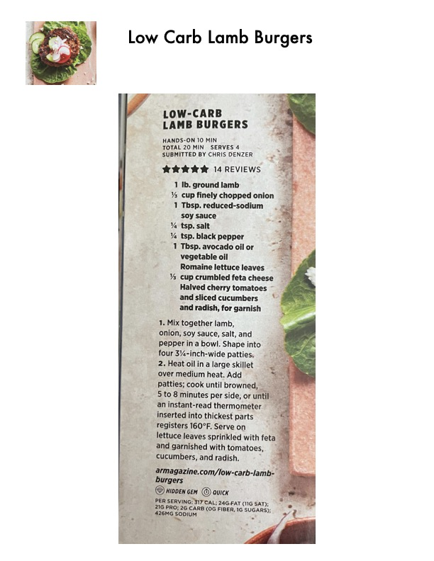

Low-Carb Lamb Burgers

Original cookbook page 178
A quick, low-carb lamb burger served on lettuce leaves with feta cheese and fresh vegetable garnishes.
Prep: 10 minutes • Cook: 10-16 minutes • Total: 20 minutes
Ingredients
- 1 lb. ground lamb
- ½ cup finely chopped onion
- 1 Tbsp. reduced-sodium soy sauce
- ¼ tsp. salt
- ¼ tsp. black pepper
- 1 Tbsp. avocado oil or vegetable oil
- Romaine lettuce leaves
- ½ cup crumbled feta cheese
- Halved cherry tomatoes and sliced cucumbers and radish, for garnish
Instructions
- Mix together lamb, onion, soy sauce, salt, and pepper in a bowl. Shape into four 3¼-inch-wide patties.
- Heat oil in a large skillet over medium heat. Add patties; cook until browned, 5 to 8 minutes per side, or until an instant-read thermometer inserted into thickest parts registers 160°F.
- Serve on lettuce leaves sprinkled with feta and garnished with tomatoes, cucumbers, and radish.
📝 Recipe Notes
Rating: 5 stars from 14 reviews. Submitted by Chris Denzer. Categorized as both a 'Hidden Gem' and 'Quick' recipe. Uses lettuce wraps instead of buns to keep it low-carb (only 2g carbs per serving). Internal temperature of 160°F ensures food-safe doneness for ground lamb.
Recipe #178 from collection